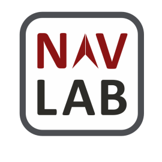

Welcome to the LuPNT Library
LuPNT is an open-source C++/Python library for Lunar Positioning, Navigation, and Timing Analysis (LuPNT).
Note: This project is under active development.
Source Code and Documentation
All source code is available on GitHub at github.com/stanford-navlab/LuPNT.
The documentation is available at at stanford-navlab.github.io/LuPNT/.
Attribution
This project is a product of the Stanford NAV Lab. If using this project in your own work please cite the following:
@inproceedings{IiyamaCasadesus2023,
title = {LuPNT: Open-Souce Simulator for Lunar Positioning, Navigation, and Timing},
author={Iiyama, Keidai and Casadesus Vila, Guillem and Gao, Grace},
booktitle={Proceedings of the Institute of Navigation GNSS+ conference (ION GNSS+ 2023)},
institution = {Stanford University},
year = {2023},
url = {https://github.com/Stanford-NavLab/LuPNT},
}
Installation
Step 1: Install Required Packages and Files
Todo: Create a bashfile to do the installation
- autodiff
- For automatic differentiation
- Tested with v.0.6.12
- Rename the entire folder to "autodiff", and place it under lupnt/3rdparty
- cspice
- For planetary ephemris and frame conversion
- Name the folder
cspice and place it under lupnt/3rdparty
- Then move
cpsice.a and csupport.a under cspice/lib to under cspice/
- Eigen
- For vector and matrix computation
- Tested with v3.4.0
- Place the entire folder to "Eigen", and place it under lupnt/3rdparty
- boost
- libInterpolate
- For function interpolation
- Tested with version 2.6.2
- Rename the entire folder to "libInterpolate", and place it under lupnt/3rdparty
- pybind
git submodule add -b stable ../../pybind/pybind11 pybind11
git submodule update --init
- Ephemeris Files
- See here for instructions
- You can extract the kernel files from here as well
- Place the files under
/data/ephemeris
- Spherical Harmonics Files
- Place the files under
/data/spherical_harmonics
Step 2: Do Additional Setups
- Add the path to the base of this Simulator to UserFilePath.h
- In the project directory, execute following command to prohibit comitting your path changes
git update-index --assume-unchanged lupnt/core/UserFilePath.h
- If you are using VSCode (recommended), do the additional setups as listed here
Step 3: Build the LuPNT Library
After the build is completed, the generated library will be located at build/lupnt/liblupnt.a
Option 1: From VScode
- From Extensions, download
CMAKE Tools
- Inside the .vscode directory in this project, create "settings.json" and add the following CMAKE option (This required to robustly build pybind)
// cmake settings
"cmake.configureArgs": [
"-DPYTHON_INCLUDE_DIRS=path1string",
"-DPYTHON_LIBRARIES=path2string"
"-DBUILD_EXAMPLES=ON"
]
}
path1string with the output you get when typing in the following command in terminal python3 -c "import sysconfig; print(sysconfig.get_path('include'))"
path2string with the output of the following command python3 -c "import sysconfig; print(sysconfig.get_config_var('LIBDIR'))"
- Configure and Build Project from the
CMAKE tab
Option 2: From Terminal
You can build the project by calling
$ mkdir build
$ cd build
$ cmake .. -DPYTHON_INCLUDE_DIRS=$(python -c "import sysconfig; print(sysconfig.get_path('include'))") \
-DPYTHON_LIBRARIES=$(python -c "import sysconfig; print(sysconfig.get_config_var('LIBDIR'))") \
-DBUILD_EXAMPLES=ON
$ make
The two cmake options will add the path to the python libraries which is required to build pybind.
Step 4: Install the Python LuPNT Library (pylupnt)
For developers, see here for details on how to add new python bindings.
- Run CMake to build the python bindings
- Create and activate your local venv environment
$ python3 -m venv venv
$ . /venv/bin/activate
- install the lupnt library using pip (you will need to re-run this every time you add a new function to pybind)
- Now you can use the pylupnt library inside your project (see the codes under
examples_python/)
Step 5: Run Unit Tests
To run the tests for the c++ codes, run the following script in the project root
$ ./build/test/runUnitTests
To run the tests for the Python bindings, run the following script in the project root
$ python3 -m pytest test_python
Reference for Developers
Testing with GMAT
- Some of the dynamics functions are tested by comparing outputs with the [GMAT](library) python API
- See here for instructions on how to setup the GMAT API for function
Working with VSCODE
- This project uses the Google C++ Style.
- Set the setting
C_Cpp: Clang_format_fallback Style to Google.
- Set
C_Cpp: Clang_format_style to Google if it is not set to file.
- Install prerequisites
- Install the extension CodeLLDB
- Set up run/debug targets in the CMake window, or directly run targets
- Setup useful shortcuts (Cmd+K Cmd+S) to run your run/debug targets easily
- CMake: Run Without Debugging
- CMake: Debug
- Debug: Start debugging
- To view Eigen and autodiff objects when debugging, modify the debugger configuration:
{
"version": "0.2.0",
"configurations": [
{
"name": "(lldb) Launch",
"type": "lldb",
"request": "launch",
// Resolved by CMake Tools:
"program": "${command:cmake.launchTargetPath}",
"args": [],
"cwd": "${workspaceFolder}",
"initCommands": [
"command script import \"absolute/path/to/your/eigenlldb.py\"",
]
}
]
}
- A useful command for the debug console is
p to print a variable or expression. For example, $p rv_rx_gcrf->x_, where rv_rx_gcrf is a std::shared_ptr<State>, results in: (autodiff::VectorXreal) $2 = ([0] = 291587.67232231156, [1] = 269354.82986367267, [2] = 76112.184704362284, [3] = -1.3616218570959222, [4] = 0.66603497742054196, [5] = 1.8768878200960224)
 1.9.1
1.9.1